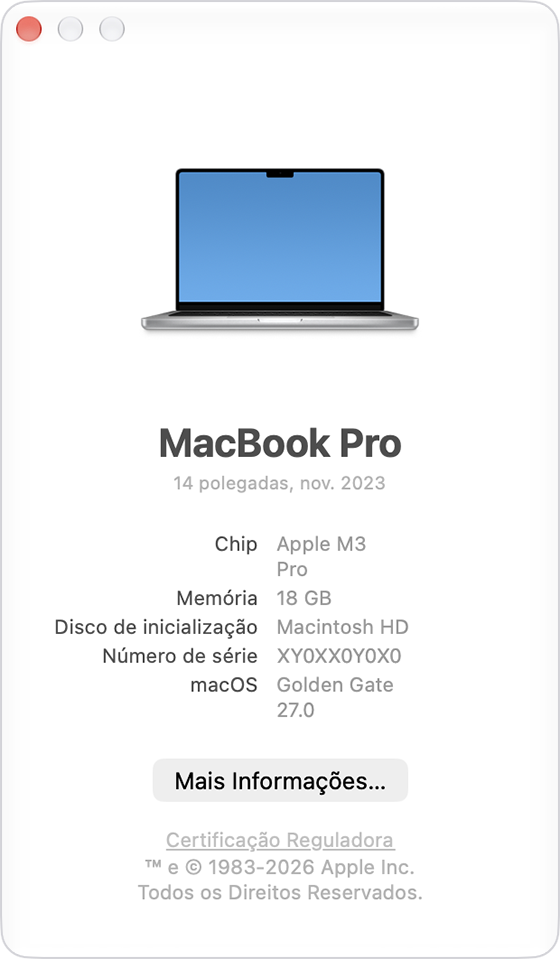
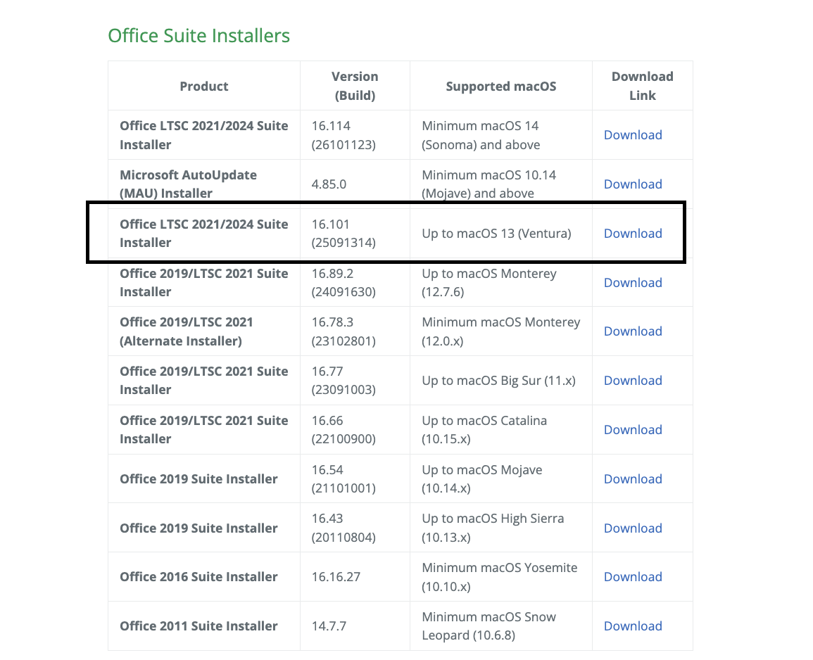
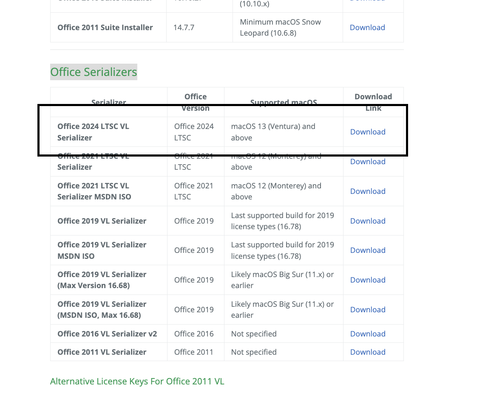

Como instalar o Office no Mac
Abrir lista de instaladores do Office para Mac ↗Instale o Office LTSC 2024 no macOS Ventura 13 e ative o Word, Excel e PowerPoint com a licença por volume da sua empresa ou escola.
1. Confira a versão do macOS
- Clique no menu Apple no canto superior esquerdo da tela.
- Selecione Sobre Este Mac.
- Procure a linha macOS e anote o nome e o número da versão.


Se aparecer outra versão, verifique os requisitos do Office para Mac antes de baixar.
2. Baixe e instale o Office para o Ventura
A linha destacada na imagem mostra o pacote Office LTSC 2021/2024 Suite Installer, versão 16.101 (25091314). O botão abaixo baixa essa versão pelo servidor da Microsoft.


- Abra Finder → Downloads e clique duas vezes no arquivo
.pkg. - Clique em Continuar, revise os termos e siga até Instalar. Se o Mac pedir, use a senha de administrador na janela do instalador.
- Aguarde a confirmação e clique em Fechar.
Esta é uma versão antiga. Consulte o histórico oficial do Office para Mac para conferir o pacote.
3. Ative o Office com a sua licença
Se sua organização possui uma licença por volume do Office LTSC 2024, procure o VL Serializer da mesma edição. Na imagem, 2024 indica a edição da licença. A referência ao Ventura indica a versão do macOS.


- Peça à equipe de TI o arquivo
Microsoft_Office_LTSC_2024_VL_Serializer.pkg. Administradores de licenças podem obtê-lo pelo Centro de Administração do Microsoft 365. Instruções oficiais da Microsoft. - Abra o pacote recebido, siga as instruções do instalador e aguarde a conclusão.
- Abra Finder → Aplicativos → Microsoft Word e crie um documento em branco para conferir se você consegue editar.
Se você usa Microsoft 365 ou comprou o Office 2024 separadamente, abra o Word e entre com a conta vinculada à licença. Guia de ativação para Mac.